Historical Gallery
Discovery, Artifacts & Family
Photographs connected to the sampler discovery, family history, museum research, and historical places that helped inspire The Prescott Girls. (Click images to expand.)
{kind=link}
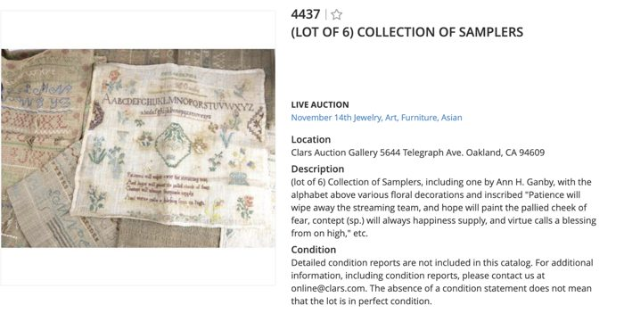
Clars Auction Listing
The Clars Auction Gallery listing in Oakland, California, where several Prescott family samplers were unexpectedly discovered, beginning the research project that ultimately inspired The Prescott Girls.
{kind=link}
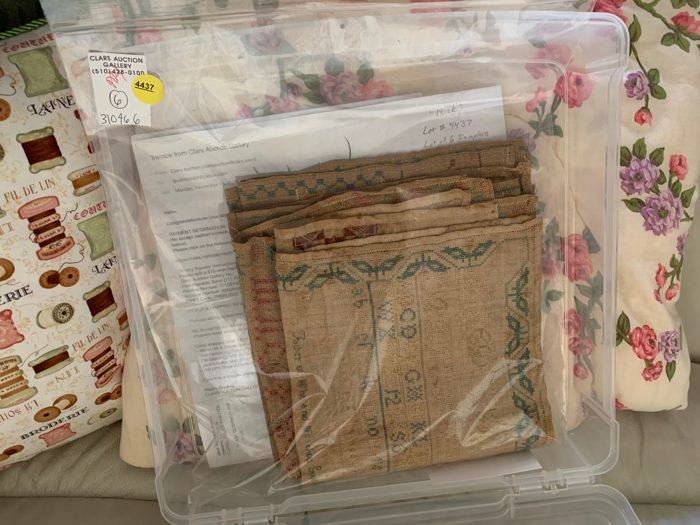
The Samplers When Found
Several Prescott family samplers had been folded and stored in a Ziploc when discovered.

Lori Studying the Samplers
Lori Love examines the group of nineteenth-century schoolgirl samplers after their discovery at auction, an early step in identifying the Prescott, Johnson, and Canby family connections.
{kind=link}
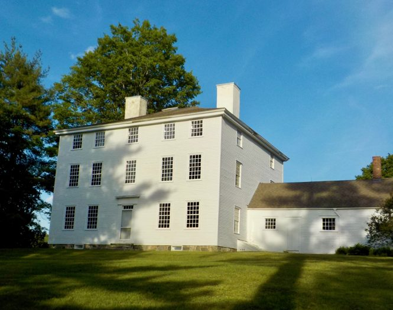
Pownalborough Court House
The Pownalborough Court House in Dresden, Maine, where the Prescott sisters lived in the 1830s and where Beckie's, Sallie's, and Mother's samplers were returned.
{kind=link}
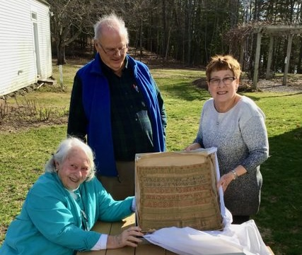
Samplers Returned to the Courthouse
Lincoln County Historical Association staff gather at the Pownalborough Court House as the samplers return to the place where the Prescott girls stitched them 200 years earlier.
{kind=link}
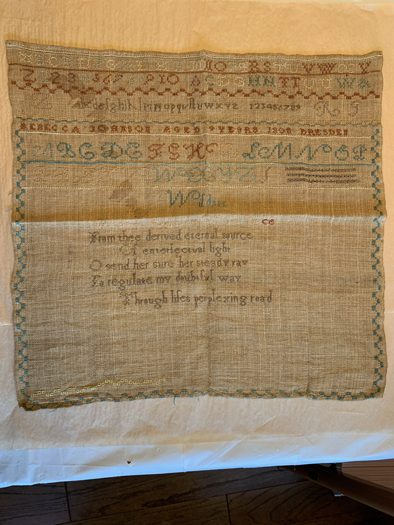
Mother's Sampler
Rebecca Goodwin Johnson's schoolgirl sampler, completed in 1813. The sampler provided a direct connection between Beckie and the previous generation of the Prescott family.
{kind=link}
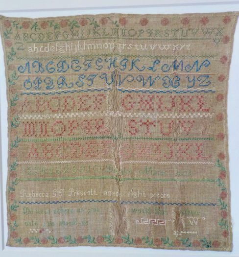
Beckie's Sampler
Rebecca Goodwin Johnson Prescott's 1835 schoolgirl sampler, stitched at age nine. The sampler became one of the central historical artifacts behind the story.
{kind=link}
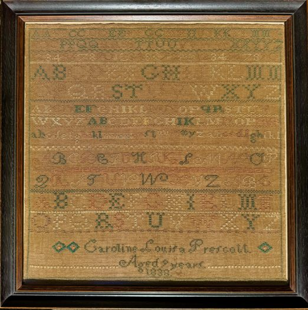
Louisa's Sampler
Caroline Louisa Prescott's sampler, completed in 1838. Louisa would later marry William Jackson Canby, a grandson of Betsy Ross.
{kind=link}
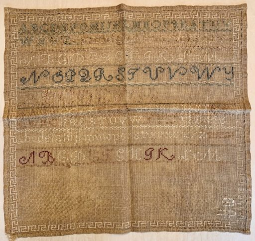
Likely Sallie's Sampler
A sampler believed to have been stitched by Sarah 'Sallie' Prescott. Although not conclusively identified, it closely matches the family's known needlework tradition.
{kind=link}
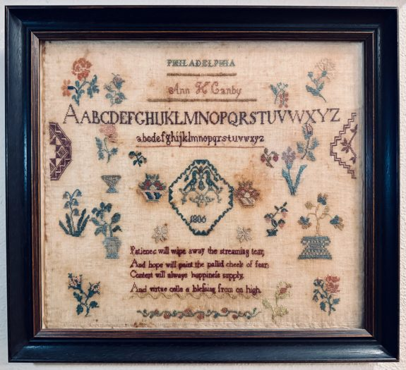
Ann Canby's Sampler
Ann's brother married Jane Claypoole, daughter of Betsy Ross. The Canby and Prescott families later united through Caroline Louisa Prescott's marriage to William Jackson Canby, Betsy Ross's grandson.
{kind=link}
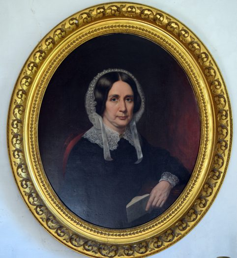
Rebecca Johnson Prescott
Portrait of Rebecca Johnson Prescott (1798–1897), mother of Beckie, Louisa, and Sallie Prescott.
{kind=link}
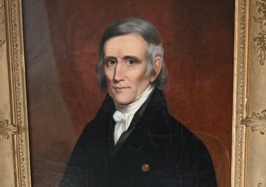
Uncle Thomas Johnson
Portrait of Thomas Johnson, uncle to the Prescott girls and one of the most important historical figures appearing in the story.
{kind=link}
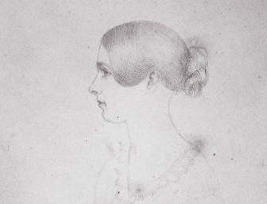
Beckie Drawn by Sallie
A later sketch of Rebecca 'Beckie' Prescott created by her cousin Sallie, providing a rare visual record of one of the girls featured in the book.
{kind=link}
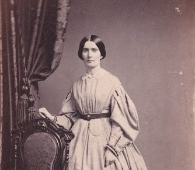
Caroline Louisa Prescott
Photograph of Caroline 'Louisa' Prescott later in life. Louisa's surviving correspondence and family connections helped link the Prescott family to the descendants of Betsy Ross.
{kind=link}
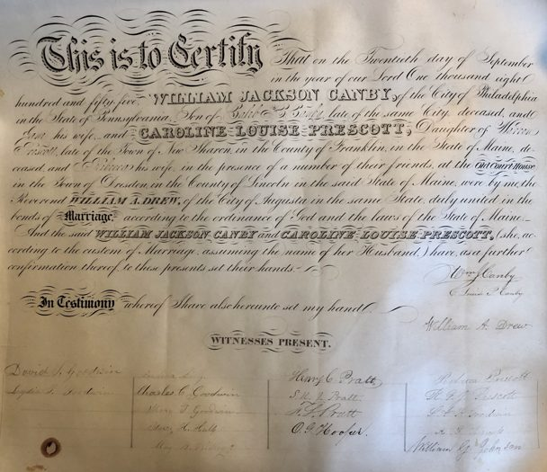
Louisa Prescott Marriage Record
Marriage record connected to Caroline Louisa Prescott, whose family history helped shape the research behind The Prescott Girls.
{kind=link}
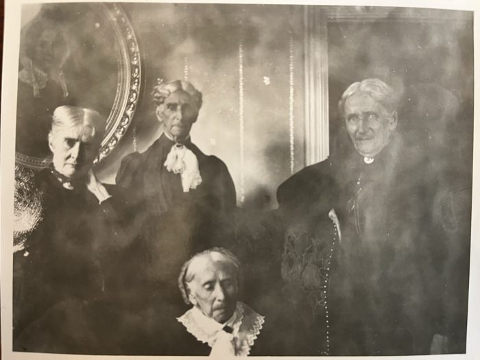
Rebecca Johnson Prescott and Her Three Daughters
From left to right: Beckie, Louisa, Sallie, and their mother, Rebecca Johnson Prescott. This rare family photograph shows the three Prescott sisters whose childhood inspired The Prescott Girls.
Betsy Ross Connections
Research into the Prescott family eventually revealed connections to Betsy Ross through Caroline Louisa Prescott's marriage to William Jackson Canby, a grandson of Betsy Ross. Archival documents, family records, and historical artifacts helped trace these relationships and place the Prescott story within a broader American historical context.
{kind=link}
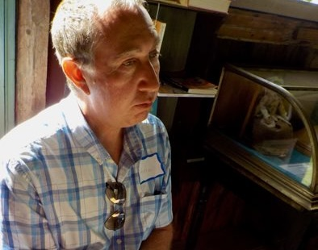
Reading from John Claypoole's Diary
Examining the diary of John Claypoole, Betsy Ross's third husband. Long thought lost, the diary resurfaced through descendants' efforts to preserve family records and now resides at the Museum of the American Revolution. Its reappearance paralleled the rediscovery of the Prescott family samplers and other artifacts connected to the project.
{kind=link}
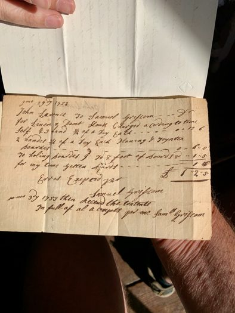
Receipt Signed by Samuel Griscom
Author holding a receipt written and signed by Samuel Griscom, father of Betsy Ross. Surviving family documents such as this provided tangible connections to the people whose lives became part of the broader historical narrative uncovered during the project.
{kind=link}
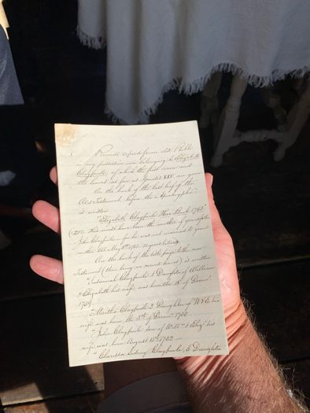
Betsy Ross Family Bible Transcript
A transcript of the Betsy Ross family Bible prepared by her grandson William Jackson Canby, husband of Louisa Prescott. Family records, correspondence, and other surviving artifacts helped trace relationships between the Ross, Canby, and Prescott families across multiple generations.
{kind=link}
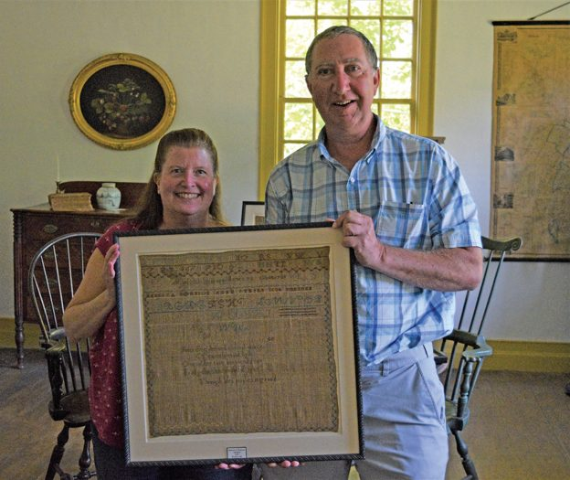
Local News Story About The Return Of The Samplers
Following the return of the samplers, the Lincoln County News published a story describing the return of Rebecca Johnson Prescott's portrait and the samplers stitched by her and her daughters.
{kind=link}
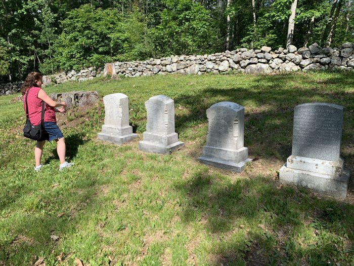
Lori at the Prescott Family Graves
Lori Love visits the Prescott family graves in Dresden, Maine, part of the genealogical and place-based research behind the sampler story.
{kind=link}
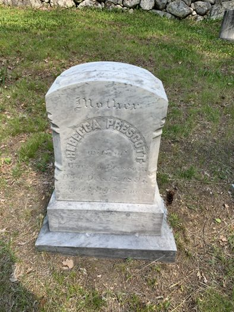
Rebecca Johnson Prescott Grave Marker
The grave marker of Rebecca Johnson Prescott, mother of Beckie, Louisa, and Sallie Prescott, whose family history is central to The Prescott Girls.
{kind=link}
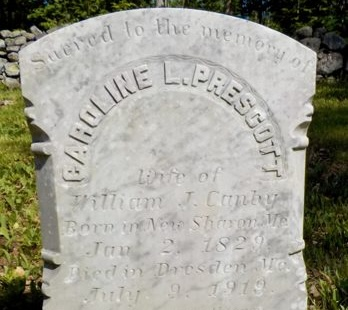
Caroline Louisa Prescott Canby's Grave Marker
The grave marker of Caroline Louisa Prescott Canby, whose 1838 sampler and later marriage into the Canby family connected the Prescott story to the Betsy Ross family.
{kind=link}
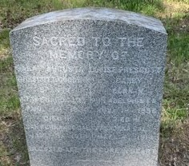
Sallie (Sarah) Prescott Grave Marker
The grave marker of Sallie Prescott, one of the Prescott sisters whose life and family context helped shape the historical research behind the book.
Museums and Collections
Museum and collection visits helped connect the schoolgirl sampler story to broader histories of textile work, family memory, preservation, and public history.
{kind=link}
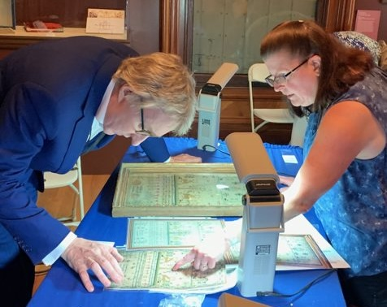
Visit to Antiques Roadshow
Lori discussing one of her other samplers with Leigh Keno during the filming of Antiques Roadshow. Conversations with appraisers, curators, and collectors over many years helped shape the research that led to the discovery and interpretation of the Prescott family samplers.
{kind=link}
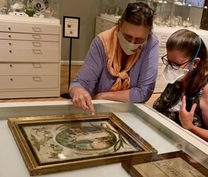
Historic Samplers at the DAR Museum
Studying historic needlework with Alden O'Brien at the Daughters of the American Revolution Museum in Washington, DC. Alden served for many years as Curator of Costumes and Textiles, helping build one of the nation's most important collections for the study of early American needlework.

Studying Samplers at Winterthur
Examining historic needlework with Laura Johnson as part of the broader research into nineteenth-century samplers and their makers. Since this visit, Laura has become Curator of Costumes and Textiles at the Smithsonian National Museum of American History.
{kind=link}
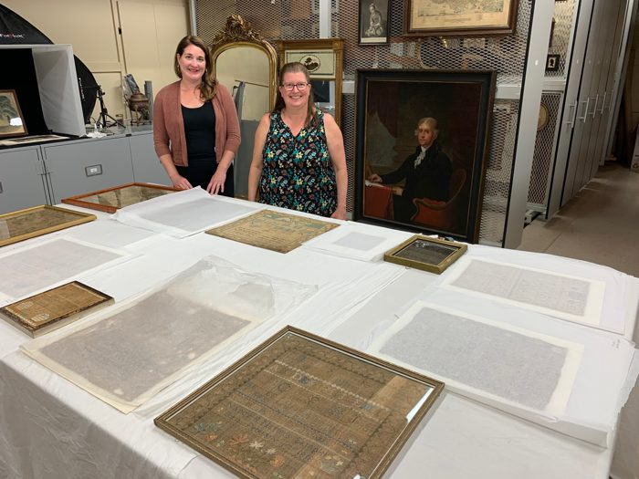
Research at Strawbery Banke Museum
Viewing historic samplers and related materials during a museum research visit with Elizabeth Farish, Chief Curator at the Strawbery Banke Museum. Her expertise in New England decorative arts and material culture helped place the Prescott family artifacts within the broader context of nineteenth-century life.
{kind=link}
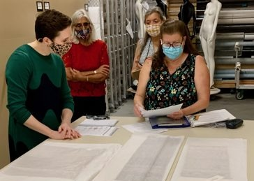
Research Visit to the de Young Museum
Lori Love and colleagues meet with Laura Camerlengo, Curator of Textile Arts at the de Young Museum, to study seventeenth-century samplers. Her expertise in European textiles and historic embroidery provided valuable context for understanding the traditions that influenced later American schoolgirl needlework.
{kind=link}
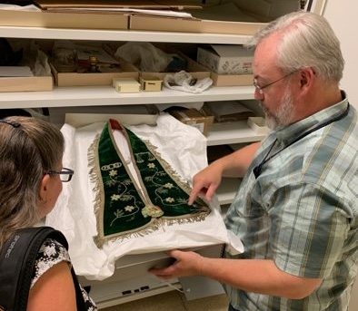
Smithsonian Archives Visit
Examining textiles and historical materials with Tim Winkle during a behind-the-scenes collection visit at the Smithsonian National Museum of American History. Access to the Smithsonian's collections helped place the Prescott family samplers within the wider story of early American craftsmanship and daily life.
{kind=link}
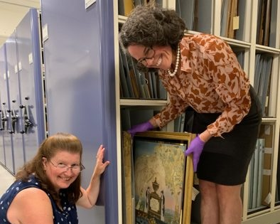
New England Collection Visit
A visit with Laura Johnson to the Historic New England Archives to examine historic samplers, artworks, and other archival materials. Laura’s expertise in New England textiles and material culture helped connect the Prescott family samplers to broader regional traditions of needlework and preservation.
{kind=link}
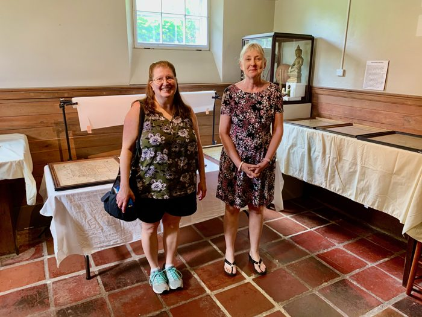
Guests at the Saco Museum
A research visit with Tara Vose Raiselis, Curator and Director of the Saco Museum in Biddeford, Maine and co-author, with Leslie Rounds, of I My Needle Ply with Skill and Industry and Virtue Joined: Schoolgirl Needlework of Northern New England.
Clothing Research
Photographs connected to the research behind the clothing worn in the book.
{kind=link}
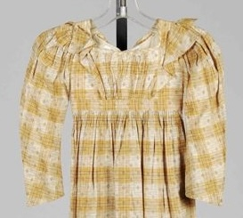
Beckie's Dress
An 1830s dress from the University of Rhode Island Historic Textile and Costume Collection used as a primary reference for Beckie's clothing.
{kind=link}
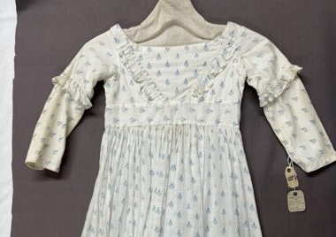
Louisa's Dress
An 1830s child's dress from the University of Rhode Island collection used as reference for Louisa's appearance in the illustrations.
{kind=link}
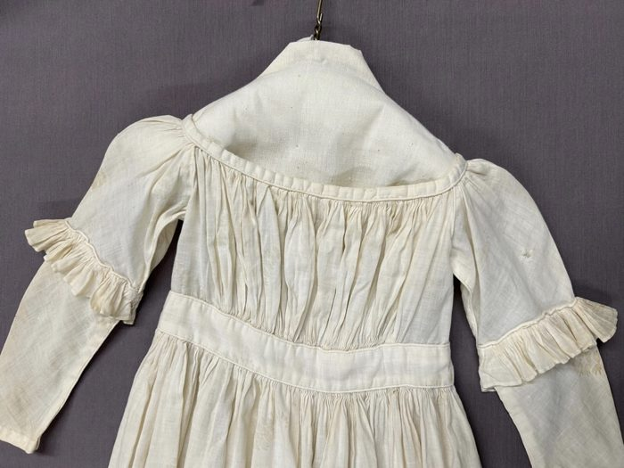
Sallie's Dress
An 1830s dress from the University of Rhode Island collection used to ensure period-accurate clothing details for Sallie.
{kind=link}
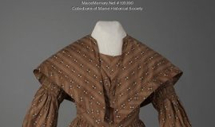
Mother's Dress
An 1830s dress from the Maine Historical Society. MMN-105390 Dress - Brown cotton print with large cape collar and full sleeves, c.1830s
{kind=link}
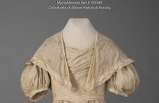
Mother's Dress
An 1830s dress from the Maine Historical Society. MMN-105395 Dress - Cream Muslin with motif, c.1830's
{kind=link}
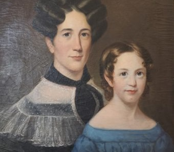
Aunt Nancy and Cousin Lydia's Dresses
Based on historic portrait at the Pownalborough Court House Museum, courtesy of the Lincoln Count Historical Association